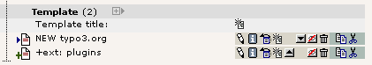

Extension
Key:
Language:
Keywords:
Copyright
2000-2008,
This document is published under the Open Content License
available from http://www.opencontent.org/opl.shtml
The content of this document is related to TYPO3
-
a GNU/GPL CMS/Framework available from www.typo3.org
Revised for TYPO3 4.2, November 2008
TypoScript Syntax and In-depth Study 1
TypoScript syntax, object paths, objects and properties 3
More about syntax, semantics and TypoScript compared to XML and XSLT 13
Parsing, Storing and Executing TypoScript 16
Syntax highlighting and debugging 17
Actually this document should have been much much shorter - after all the TypoScript syntax can be defined in a few lines. However TypoScript has a history of confusing people and therefore this introductory chapter has been dedicated to clearly define what TypoScript is so you can be sure to have the right perception.
My recommendation is that you at least read the next section “What is TypoScript?” and then you can proceed to the chapter “Syntax” and read that. If you are at any time confused about the concept of TypoScript please make sure to come back and read the introduction to the end!
If you are confused already, please don't skip anything. Better safe than sorry.
Since people are generally confused about what TypoScript (TS) is, where it can be used and has a tendency to think of it as something complex this document has been written to clearly explain these issues.
First lets start with some basic truths:
TypoScript is a syntax for defining information in a hierarchical structure using simple ASCII text content.
This means that:
TypoScript itself does not "do" anything - it just contains information.
TypoScript is only transformed into function when it is passed to a program which is designed to act according to the information in a TypoScript information structure.
So strictly speaking TypoScript has no function in itself, only when used in a certain context. Since the context is almost always to configure something you can often understand TypoScript as parameters (or function arguments) passed to a function which acts accordingly (eg. "background_color = red"). And on the contrary you will probably never see TypoScript used to store information like a database of addresses - you would use XML or SQL for that.
In scope of its use you can also understand TypoScript as a non-strict way to enter information into a multidimensional array. In fact when TypoScript is parsed that means it is transformed into a PHP array! So when would you define static information in PHP arrays? You would do that in configuration files - but probably not build your address database!
This can be summarized as follows:
When TypoScript is parsed it means that the information is transformed into a PHP array from where TYPO3 applications can access it.
So the same information could in fact be defined in TypoScript or directly in PHP; but the syntax would be different for the two of course.
TypoScript offers convenient features which is the reason why we don't just define the information directly with PHP syntax into arrays. These features include a relaxed handling of syntax errors, definition of values with less language symbols needed and the ability of using an object/property metaphor etc.
For more details see the bottom of the next page.
See, that is what this document is about - the syntax of TypoScript; the rules you must obey in order to store information in this structure. Obviously I'll not explain the full syntax here but just give an example to convey the idea.
Remember it is about storing information, so think about TypoScript as assigning values to variables: The "variables" are called "object paths" because TypoScript easily lends itself to the metaphor of "objects" and "properties". This has some advantages as we shall see but at the same time TypoScript is designed to allow a very simple and straight forward assignment of values; simply by using the equal-sign as an operator:
asdf = qwerty
Now the object path "asdf" contains the value "qwerty".
Another example:
asdf.zxcvbnm = uiop asdf.backgroundColor = blue
Now the object path "asdf.zxcvbnm" contains the value "uiop" and "asdf.backgroundColor" contains the value "blue". According to the syntax of TypoScript this could also have been written more comfortably as:
asdf {
zxcvbnm = uiop
backgroundColor = blue
}
What happend here is that we broke down the full object path, "asdf.zxcvbnm" into its components "asdf" and "zxcvbnm" which are separated by a period, ".", and then we used the curly brace operators, { and } , to bind them together again. To describe this relationship of the components of an object path we normally call "asdf " the object and " zxcvbnm " the property of that object.
So although the terms objects and properties normally hint at some context (semantics) we may also use them purely to describe the various parts of an object path without considering the context and meaning. Consider this:
asdf {
zxcvbnm = uiop
backgroundColor = blue
backgroundColor.transparency = 95%
}
Here we can say that "zxcvbnm" and "backgroundColor" are properties of (the object) "asdf". Further, "transparency" is a property of (the object / the property) "backgroundColor" (or "asdf.backgroundColor").
Note about perceived semantics:
You may now think that "backgroundColor = blue" makes more sense than "zxcvbnm = uiop" but in reality it doesn't! The only reason that "backgroundColor = blue" seems to make sense is that in the English language we understand the words "background color" and "blue" and automatically implies some meaning. But to a machine like a computer the word "backgroundColor" makes just as little sense as "zxcvbnm" unless it has been programmed to understand either one and take its value as the background color for something. In fact "uiop" could be an alias for blue color values and "zxcvbnm" could be programmed as the property setting the background color of something, eg. a HTML page.
This just serves to point one thing out: Although most programming languages and TypoScript use function, method, keyword and property names which humans can often deduct some meaning from then ultimately the programming reference, DTD or XML-Schema defines the meaning.
Note about the internal structure when parsed into a PHP array:
As stated in the previous chapter TypoScript can be understood as a lightweight way to enter information into a multidimensional PHP array. Lets take the TypoScript from above as an example:
asdf {
zxcvbnm = uiop
backgroundColor = blue
backgroundColor.transparency = 95%
}When parsed, this information will be stored in a PHP array which could be defined as follows:
$TS['asdf.']['zxcvbnm'] = 'uiop'; $TS['asdf.']['backgroundColor'] = 'blue'; $TS['asdf.']['backgroundColor.']['transparency'] = '95%';
Or alternatively you could define the information in the PHP array like this:
$TS = array( 'asdf.' => array( 'zxcvbnm' => 'uiop', 'backgroundColor' => 'blue', 'backgroundColor.' => array ( 'transparency' => '95%' ) ) )
Personally I'm still convinced that TypoScript is the best syntax for the job! Less symbols involved and non-technical users can safely write it (although non-techs are not meant to use TS!) without fearing PHP parsing errors which will harshly abort the execution of page generation (or whatever).
Remember, TypoScript is like a (large) multidimensional PHP array; values arranged in a hierarchy - a tree. The "branches" are indicated with periods (".") - a syntax borrowed from for example JavaScript and which conveys the idea of defining objects/properties. For more details on these metaphors you should read the introductory chapters of this document. Here we will only deal with the syntactically rules.
myObject = [value 1] myObject.myProperty = [value 2] myObject.myProperty.firstProperty = [value 3] myObject.myProperty.secondProperty = [value 4]
Refering to "myObject" we might call it an "object with the value [value 1] and the property, 'myProperty' with the value [value 2]. Furthermore 'myPropery' has its own two properties, 'firstProperty' and 'secondProperty' with a value each ([value 3] and [value 4])."
We might even call 'myProperty' for a TypoScript object in this example! This is already explained in the introduction chapter.
Remember, TypoScript contains information and is not "executed" like a real scripting language is; therefore it doesn't report any errors if you specify non-existing objects or non-existing properties. Such an evaluation only makes sense when TypoScript is used in a context (like "TypoScript Templates" or "Page TSconfig"). However we can always evaluate TypoScript for a correct syntax (which means whether information is defined in a correct way, following the “grammatical” rules).
Anyways, the TypoScript above looks like this in a node-tree (the TypoScript Object Browser creates such):

TypoScript is parsed in a very simple way; line by line. This means that each line normally contains three parts based on this formula:
[Object Path] [Operator] [Value]
Example:
myObject.myProperty = [value 2]
Object path is like the variable name in a programming language (Above: myObject.myProperty ). The object path is the first block of non-whitespace characters on a line until a "=<>{( "-character (space included) is found. Use only A-Z, a-z, 0-9, "-", "_" and periods (.) for Object Paths.
Operator
is one of the characters “=<>{(“ (Above: “=”). The
significance of each is described below.
There is one special
operator “:=” that changes the value depending on a predefined
function.
Value is whatever characters that proceeds the operator until the end of the line, but trimmed for whitespace (Above: [value 2]). Notice that values are not encapsulated in quotes! The value starts after the operator and ends with the linebreak.
Here myObject is defined as a HTML content object and the property "value" is set (from the context of TypoScript Templates):
myObject = HTML myObject.value = <BLINK> HTML - code </BLINK>

...then it's considered a comment which means the line is totally ignored.
Example:
// This is a comment / This is also a comment (only ONE slash is needed) myObject = HTML myObject.value = <BLINK> HTML - code </BLINK> # This line is also a comment.
... it defines the beginning or the end of a comment section respectively. Anything within a comment section is ignored.
Rules:
/* and */ MUST be the very first characters of a trimmed line in order to be detected.
Comments are not detected inside a multiline value parenthesis.
Example:
/* This is a comment
.. and this line is within that comment which...
ends here:
*/ ... this is not parsed either though - the whole line is still within the comment
myObject = HTML
myObject.value (
Here's a multiline value which
/*
ignores comments in side, so this is parsed!
*/
)
assigns a value to an object path.
Rules:
Everything after the "="-sign and to the end of the line is considered to be the value. In other words: You don't need to quote anything! Please be aware that the value will be trimmed which means stripped for whitespace in both ends.
assigns a value to an object path by calling a predefined function which modifies the existing value of the current object path in different ways.
This is very useful for extending lists of page IDs etc. when a value should be extended without redefining it completely again.
Rules:
The portion after the “:=”-operator and to the end of the line is split in two parts: A function and a value. The function is specified right next to the operator (trimmed) and holding the value in brackets (not trimmed).
There are four predefined functions:
prependString: Adds a string to the beginning of the existing value.
appendString: Adds a string to the end of the existing value.
removeString: Removes a string from the existing value.
replaceString: Replaces old with new value. Separate these using “|”.
addToList: Adds a comma-separated list of values to the end of a string value. There is no check for duplicate values, and the list is not sorted in any way.
removeFromList: Removes a comma-separated list of values from a comma-separated list.
There is a hook inside class.t3lib_tsparser.php which can be used to define more functions like this.
Example:
myObject = TEXT myObject.value = 1,2,3 myObject.value := addToList(4,5) myObject.value := removeFromList(2,1)
...results in the same like this:
myObject = TEXT myObject.value = 3,4,5
(opening/closing curly braces) means, that you can assign many object-properties in a simple way at once. It's called a confinement or nesting of properties.
Example:
myObject = HTML myObject.value = <BLINK> HTML - code </BLINK>
...is the same as:
myObject = HTML
myObject {
value = <BLINK> HTML - code </BLINK>
}Rules:
Everything on the second line that comes after "{" is ignored.
The "}"-sign must be the first non-space character on a line in order to finish the confinement. Everything after "}" is ignored.
NOTE: You cannot use conditions inside of braces (except the [GLOBAL] condition which will be detected and reset the brace-level to zero)
NOTE: Excessive end braces are ignored, but issues a warning in the TypoScript parser.
(opening/closing parenthesis) means, that you can assign a multiline value. By this method you can define values which span over several lines and thus includes line breaks.
Example:
myObject = HTML
myObject.value (
<BLINK>
HTML - code
</BLINK>
)Rules:
NOTE: The end-parenthesis is extremely important as if it is not found, the parser does not return to parsing TypoScript. This includes the [GLOBAL] condition which will not save you! So don't miss it!
is used to copy one object path to another. The whole object is copied - both value and properties - and it overrides any old objects and values at that position.
Example:
myObject = HTML myObject.value = <BLINK> HTML - code </BLINK> myOtherObject < myObject
In this case you have two independent sets of objects/properties which exactly the same (duplicates). They are not references to each other but actually copies:
Another example (copy from within curly brace confinement):
pageObj {
10 = HTML
10.value = <BLINK> HTML - code </BLINK>
20 < pageObj.10
}Here you also make a copy of an object. The object is referred to from the root. You can also use a notation where the object is referenced from the same level. In this case you just write the object but add a period before it in order to denote that they are on the same level.
This is equal to the above example:
pageObj {
10 = HTML
10.value = <BLINK> HTML - code </BLINK>
20 <.10
}
Note about references to objects (in TypoScript Templates):
When TypoScript is used in the context of TypoScript Templates you can find that content objects can sometimes be referenced instead of copied. References mean that multiple positions in an object tree can use the same object at another position without making an actual copy of the object but by simply pointing to the objects full object path.
An example based on the above code:
0: myObject = HTML 1: myObject.value = <BLINK> HTML - code </BLINK> 2: 3: pageObj { 4: 10 = < myObject 5: }
Watch line 4: This looks like a feature of TypoScript but it is not!!! It is a feature implemented on the context level which means that it only works because the TypoScript Template Engine has been programmed to perceive content object names starting with “<” as a reference to the object path following the < sign.
In fact, if we look at the parsed TypoScript in a node tree we can see that “< myObject” is nothing but the simple value of the object path “pageObj.10”:
This note just served to point out this potential misconception you might get when you begin working with TypoScript in relation to template building.
This is used to unset an object and all its properties.
Example:
myObject = HTML myObject.value = <BLINK> HTML - code </BLINK> myObject >
In this last line “myObject” is totally wiped out (removed)
Conditions break the parsing of the TypoScript in order to evaluate the content of the condition line. If the evaluation returns true parsing continues, otherwise the following TypoScript is ignored until the next condition found where a new evaluation will be performed. The next section in this document describes conditions in more detail.
Example:
[browser=netscape] page.10.value = Netscape [else] page.10.value = Not a netscape browser! [end]
Rules:
Conditions can break the parsing only when outside of any confinement (curly brace levels).
There is a possibility of using so called conditions in TypoScript. Conditions are simple control structures, that validates true or false based on some criteria (externally validated) and thereby determines whether the following TypoScript code until the next condition found should be parsed or not.
Examples of a condition could be:
Is the browser “Netscape”?
Is a usergroup set for the current session?
Is it monday?
Is the GET parameter “&language=uk” set?
Is it my mothers birthday?
Do I feel lucky today?
Of these examples admittedly the first few is the most realistic, in fact they are readily available in the context of TypoScript Templates. But a condition can theoretically evaluate any circumstance and return either true/false which subsequently means the parsing of the TypoScript code that follows.
The detection of conditions is a part of the TypoScript syntax but the validation of the condition content always relies on the context where TypoScript is used. Therefore in plain syntax highlighting (no context) conditions are just highlighted and nothing more. In the context of TypoScript Templates there is a whole section of TSref which defines the syntax of the condition contents for TypoScript Templates. For “Page TSconfig” and “User TSconfig” conditions are not implemented at all.
A condition always has it's own line and the line is detected by “ [ “ (square bracket) being the first character on that line:
(Some TypoScript) [ condition 1 ][ condition 2] (Some TypoScript only parsed if cond. 1 or cond. 2 are met) [GLOBAL] (Some TypoScript)
So in this example the line “[GLOBAL]” is a condition (built-in, always returns true) and the line “[ condition 1 ][ condition 2]” is a condition. If “[ condition 1 ][ condition 2]” is true then the TypoScript in the middle would be parsed until [GLOBAL] (or [END]) resets the conditions and parses the TypoScript for any case again.
Notice: The condition line “[ condition 1 ][ condition 2]” conveys the idea of two conditions being set, but from the TypoScript parsers point of view the whole line is the condition - it is in the context of TypoScript Templates that the condition line content is broken down into smaller units (“[ condition 1 ]” and “[ condition 2]”) which are individually evaluated and OR'ed together before they return the resulting true / false value. (That is all done with the class t3lib_matchCondition).
Here is an example of some TypoScript (from the context of TypoScript Templates) where another text is outputted if you use the Netscape web browser (instead of for example Internet Explorer) or use Windows NT as operating system:
pageObj.10 = HTML pageObj.10.value = Hello World pageObj.10.value.case = upper [browser = netscape][system = WinNT] pageObj.20 = HTML pageObj.20 { value = Hello Netscape or Windows NT users!! value.case = upper } [GLOBAL] pageObj.30 = HTML pageObj.30.value = <HR>
You can now use the Object Browser to actually see the difference in the parsed object tree depending on whether the condition evaluates to true or false (which can be simulated with that module as you can see):

There's a special condition called [ELSE] which will return true if the previous condition returned false. To end an [ELSE] condition you can use either [END] or [GLOBAL]. For all three conditions you can also use them in lower case.
Here's an example of using the [ELSE]-condition (also in the context of TypoScript Templates):
page.typeNum=0 page = PAGE page.10 = TEXT [browser=netscape] page.10.value = Netscape [else] page.10.value = Not a netscape browser! [end] page.10.wrap = <B>|</B>
Here we have one output text if the browser is Netscape and another if not. Anyways the text is wrapped by <B>|</B> as we see, because this wrap is added after the [END]-condition.

The fact that you can "enable" the condition in the TypoScript Object Browser is a facility provided to simulate the outcome of any conditions you insert in a TypoScript Template. Whether or not the conditions correctly validate is only verified by actually getting a (in this example) Netscape browser and hit the site.
Another example could be if you wanted to do something special in case a bunch of conditions is NOT true. There's no negate-character, but you could do this:
[browser=netscape][usergroup=3] # Enter nothing here! [else] page.10.value = This text displays only if the conditions above are not true! [end]
Conditions can be used outside of confinements (curly braces) only!
So, this is valid:
someObject {
1property = 234
}
[browser=netscape]
someObject {
2property = 567
}
But this is not valid:
someObject {
1property = 234
[browser=netscape]
2property = 567
}
When parsed with syntax highlighting you will see this error:
This
means that the line was perceived as a regular definition of “[object
path] [operator] [value]” and not as a condition.
However for the special condition, [GLOBAL] (which resets any previous condition scope), it is a bit different since that will be detected at any line except within multiline value definitions.
someObject {
1property = 234
[GLOBAL]
2property = 567
}
But you will still get some errors if you syntax highlight it:
The reason for this is that the [GLOBAL] condition aborts the confinement started in the first line resulting in the first error (“... short of 1 end brace(s)”). The second error appears because the end brace is now in excess since the “brace level” was reset by [GLOBAL].
So, in summary; the special [global] (or [GLOBAL]) condition will at anytime break TypoScript parsing within braces and return to the global scope (unless entered in a multiline value). This is true for any TypoScript implementation whether other condition types are possible or not. Therefore you can use [GLOBAL] (put on a single line for itself) to make sure that proceeding TypoScript is correctly parsed from the top level. This is normally done when TypoScript code from various records is combined.
Conditions are detected by “[“ as the first line character (whitespace ignored).
Conditions are evaluated in relation to the context where TypoScript is used; They are widely used in TypoScript Templates but not at all used with “Page TSconfig” or “User TSconfig”.
Special conditions [ELSE], [END] and [GLOBAL] exists.
Conditions can be used outside of confinements (curly braces) only. However the [GLOBAL] condition will always break a confinement if entered inside of one.
You can also add include-instructions in TypoScript code. Availability depends on the context, but it works with TypoScript templates, Page TSconfig and User TSconfig.
An include-instruction looks like this:
<INCLUDE_TYPOSCRIPT: source="FILE: fileadmin/html/mainmenu_typoscript.txt">
It must have its own line in the TypoScript template, otherwise it's not recognized.
It is processed BEFORE any parsing of TypoScript (contrary to conditions) and therefore does not care about the nesting of confinements within the TypoScript code.
The “source” parameter points to the source of the included content. The string before the first “:” (in the example it is the word “FILE”) will determine which source the content is coming from. This is the options:
|
FILE |
A reference to a file relative to PATH_site. Must be less than 100 KB. Cannot contain “..” (double periods, back path). If you prefix the relative path with such as “EXT:myext/directory/file.txt” then the file included will be sought for in the extension directory of extension “myext”, subdirectory “directory/file.txt”. |
If you think you perfectly understand TypoScript now (you might already...) then don't bother with this section. I even risk confusing you again. But anyways, here it is - more theoretical information on TypoScript including references to the relationship between XML and XSLT:
XML and TypoScript - all about syntax:
A chunk of "TypoScript code" is like an XML document - it only contains information in a structured way, nothing else. But in order to store information in TypoScript or XML you need to follow the syntax - rules about how the information values can be inserted in the structure. Like the grammar for a human language defines in which order words can be combined.
For XML such rules include that "all tags must be ended, eg. <b>...</b> or <br />", correct nesting, using lowercase for element and attribute names etc. If you follow these rules an XML document is called "well formed". For TypoScript similar rules exist like "The = operator assigns the rest of the text string as the value to the preceding object path" or "A line starting with # or / is a comment and therefore ignored".
XSLT and "TypoScript Templates" - all about semantics (meaning, function):
This is syntactically valid XML:
<asdf>qwerty</asdf>
And this is syntactically valid TypoScript:
asdf = qwerty
And this is syntactically valid English:
footballs sing red
But none of these examples make sense without some reference which defines how elements, values and words can be combined in order to form meaning - they need a context. This is called semantics. For human languages we have it internally because we know footballs can't sing and you can't "sing red" - we know it's nonsense while the sentence is correctly formed. For an XML document you have it by the DTD or schema which defines if the element "<asdf>" exists on that level in the document (and if not, then it's nonsense) and for TypoScript you have it by the reference document for the context where the TypoScript syntax is used to define an information hierarchy - for instance the "TSref" for TypoScript Templates or the "TSconfig" document for "Page TSconfig" or "User TSconfig".
So an XML document makes sense only if you know the relationship of the information stored inside of the document and that is required if you want an XSLT stylesheet to transform one XML document to another document. In fact an XSLT stylesheet is like babelfish for XML - it translate one "language" of XML into another "language" of XML.
Similarly TypoScript is used as the syntax to build "TypoScript Templates" (containing semantics - meaning); the information only makes sense if it follows the rules defined in the "TSref" document.
BTW, the comparison of "TypoScript Templates" and "XSLT" is intensional since both can be described as declarational programming languages - programming by configuring values which instructs a real procedural program (eg. the TypoScript Frontend Engine which is written in PHP) how to output data. More is written on this issue on typo3.org.
For more on syntax and semantics, you can read this link that I found on the net.
This question cannot be answered completely since this document only describes the syntax of TypoScript and not any of the contexts where TypoScript syntax is applied for configuration; theoretically anyone could use the TypoScript parser class in TYPO3 to generate configuration for their own local extensions using their own local "semantics" (see another chapter in this document).
But at least we can mention the three main applications of the TypoScript syntax as used in TYPO3s core parts:
Page TSconfig - customization of branches of the Page tree.
User TSconfig - customization of users and their groups.
TypoScript Templates - definition and customization of each website found in the page tree.
Each page record in TYPO3 has a field where you can enter "TSconfig". The main idea with Page TSconfig is that you can configure individual behavior for separate parts of the page tree. This is possible because the TypoScript code entered in the TSconfig fields is accumulated for all pages in the root line of the current position in the page tree starting from the root and going outwards. Thus TypoScript settings in TSconfig fields of outer pages can override those settings of pages closer to the root.
For instance you may have two separate websites located in separate branches of the page tree. The one website might support content from only the "normal" column while the other website supports it for both the "normal" and "border" column. Since the Page module by default shows all four possible columns you may want to instruct the page module to show only the normal column and normal + border column respectively. But this will only be possible if you can somehow tell the system that from this page and outwards, use only "normal" column and from that page and outwards use only "normal" + "border" column. So in the root page of the two-column website you enter this line in the TSconfig field:
And likewise for the one-column website you enter this value in the TSconfig field of the root page:
Now the "Page" module will receive the value of the property "colPos_list" when showing the page content available for any subpage of the root page where the configuration was entered. Accordingly only the configured columns will be shown.
The objects and properties you can use here is generally defined in the document "TSConfig" in addition to local extension documents.
Each frontend and backend user and group has a field for input of TSconfig. The main idea with User TSconfig is that you can configure individual behavior for groups and even users themselves. The possibilities are normally settings which are on a more detailed level than what you can already set as permission settings in the main forms for users/groups. For instance you could configure how many clipboard pads a user should see or whether a "Save document and add new" button should appear for all forms for this user - stuff which is clearly too detailed for a spot in the main form for permissions and settings.
Like with Page TSconfig the content of the TSconfig fields are accumulated in a certain order; the order of member groups and finally the users own fields settings. Thus a setting for a user will override the setting for one of his member groups.
To mention an example of what you can do with User TSconfig for a backend user, then this line will enable the "Save document and create new" button in editing forms:
The objects and properties you can use here is generally defined in the document "TSConfig" in addition to local extension documents.
The most (in)famous and extensive use of TypoScript is in the frontend engine where TypoScript is used to configure how the frontend engine will put together the website output. This is probably also where TypoScript clashes most with traditional ideas of template building in web design and confuses people to think of TypoScript as a programming language - with the result that they find it even more confusing. (If TYPO3 has a scripting language it is not TypoScript but PHP!)
This introduction to TypoScript tries to eliminate this confusion and therefore let us make two statements about how TYPO3 handles templates:
No fixed template method: TYPO3 does not offer one fixed way to dealing with templates for websites; rather you are set free to choose the way you find most appealing. You can:
HTML templates; configure TYPO3 to facilitate external HTML-templates with markers and subparts. Popular and familiar for most people. Please see the tutorial "Modern Template Building, Part 1".
Ext. Templating Engines: configure TYPO3 to use XSLT stylesheets with an XSLT processor. This is done either by an extension providing this functionality or by writing your own extension for it.
Custom PHP: configure TYPO3 to call your own PHP-code which generates content in any way you may prefer. This might include using third party templating engines!
TS content objects: or build the page by the Frontend Engines "content objects" which are accessible/programmable through the TypoScript syntax.
TypoScript Templates determines the method: No matter which template method (see list above) you would like to use TYPO3 needs to be told which one! And this is what the TypoScript Template does first and foremost; it is used to configure basic and advanced behaviors of the frontend engine so that the site rendering gets done.
A TypoScript Template works a little like the Page TSconfig; it is a database record attaching its TypoScript content to a certain page and from that page and outwards the configuration contained in the TypoScript will affect the pages until a new template record is found which overrides content from earlier in the tree. Thus TypoScript Template records are effectively defining which page is the root page of a website:

TypoScript Templates contain a field for the TypoScript configuration code ("Setup" field) but a template record like the one on the picture above ("NEW typo3.org") can also contain references to other template records and files which contain predefined generally useful TypoScript code which is included and thus reusable/sharable across templates. The order of included TypoScript template records / files can be visually seen with the Template Analyzer extension (tstemplate_analyzer):
To get more background knowledge about how TypoScript templates work please read the document TypoScript Templates. To read about all standard objects and properties you can use in building TypoScript templates you should refer to TypoScript reference - TSref. For practical examples when you want to learn by doing, look at TypoScript by Example.
Since TypoScript has a line-based syntax which most of all resembles what is found in simple text based configuration files it is also authored in ordinary textarea input fields inside of TYPO3. An example is the "TSconfig" box of a regular page header:
This is typically how TypoScript is entered - directly in form fields. No syntax highlighting, no way of using TAB stops, no line number counting etc. Quite boring and rudimentary. Of course the lack of such features is not a political manifest but rather the lack of the ability to create such features with a simple textarea. Could anyone provide a nice Java-editor instead we would be happy. (In the meantime you can find TypoScript syntax highlighting for certain text editors. Ask on the mailing lists or search typo3.org).
However there are some helpful features:
a) There is the "TS wizard" icon which is often found to the right of the textarea - this can help you finding properties for the current TypoScript context
b) there also is the ability to insert an include-tag in any TypoScript field (see later in this document) which refers to an external file which can contain TypoScript - and that file can be edited with an external editor with whatever benefits that has.
This means that the TypoScript text content is transformed into a PHP array structure by following the rules of the TypoScript syntax. But still the meaning of the parsed content is not evaluated.
During parsing, syntax errors may occur when the input TypoScript text content does not follow the rules of the TypoScript syntax. The parser is however very forgiving in that case and it only registers an error internally while it will continue to parse the TypoScript code. Syntax errors can therefore be seen only with a tool that analyzes the syntax - like the syntax highlighter does.
The class "t3lib_tsparser" is used to parse TypoScript content. Please see another chapter in this document for details.
When TypoScript has been parsed it is stored in a PHP array (which is often serialized and cached in the database afterward). If you take the TypoScript from the introduction examples and parses it you will get a result like below:
First, the TypoScript:
asdf = qwerty
asdf {
zxcvbnm = uiop
backgroundColor = blue
backgroundColor.transparency = 95%
}
Then after parsing it with the function "parse()" in the t3lib_tsparser class the internal variable $this->setup in that class will contain a PHP array which looks like this (with the print_r() PHP function):
Array
(
[asdf] => qwerty
[asdf.] => Array
(
[zxcvbnm] => uiop
[backgroundColor] => blue
[backgroundColor.] => Array
(
[transparency] => 95%
)
)
)
You can also print the array by an API function in TYPO3, namely t3lib_div::view_array() or just debug(). Then it looks like this:
As you see the value ("blue") of the property "backgroundColor" can be fetched by this PHP code:
$this->setup['asdf.']['backgroundColor']
So you can say that TypoScript offers a text-based interface for getting values into a multidimensional PHP array from a simple text field or file. This can be very useful if you need to take that kind of input from users without giving them direct access to PHP code - hence the reason why TypoScript came into existence.
Since TypoScript itself contains only information (!) you cannot "execute" it. The closest you come to "executing" TypoScript is when you take the PHP array with the parsed TypoScript structure and passes it to a PHP function which then performs whatever actions according to the values found in the array. This is the syntax/semantics debate again.
Syntax highlighting of TypoScript code is done by various analysis applications in TYPO3 like the Template Analyzer for TypoScript Templates or the User Admin module or Page TSconfig function in the Info module. These typically allows you to view the TypoScript in each context highlighted with syntax.
Here is an example from Page TSconfig:
In the extension "extdeveval" you will also find a tool, "Code highlighting", which can analyse TypoScript code adhoc:
There are various modes of display:
The analytic mode (displayed above) colors all parts of the syntax:
Object and property names gets light blue background (#1)
Values get a yellow background (#2)
Whitespace becomes olive green in the background (#3)
Operators are colored with a brown background
Another mode is the "Block mode", which simply indents the TypoScript code:
Finally you will be warned if syntax errors are found and ignored data will also be highlighted in green:
Debugging TypoScript for syntax errors can be done with this tool and any other place where the syntax highlighter is used. But this will only tell you if something is syntactically wrong with the code - whether you combine objects and properties semantically correctly depends on the context and cannot be told by the TypoScript parser itself.
Currently no tools exist to do semantically checking for either TypoScript Templates, Page TSconfig or User TSconfig (writing summer 2003)
(This tool for syntax highlighting is available from TYPO3 version 3.6.0)
This page is the final word in this introduction chapter to the TypoScript syntax. It contains a few remarks and answers to questions you may still have. So here it goes:
This is misleading to say since you will think that TypoScript is like PHP or JavaScript while it is not. From the previous pages you have learned that TypoScript strictly speaking is just a syntax. However when the TypoScript syntax is applied to create TypoScript Templates then it begins to look like programming and the parallel to XSLT might also hint at that.
In any case TypoScript is NOT a comparable to a scripting language like PHP or JavaScript. In fact, if TYPO3 offers any scripting language it is PHP itself! TypoScript is only an API which is often used to configure underlying PHP code.
Finally; The name "TypoScript" is misleading as well. We are sorry about that, too late to change now.
TypoScript was designed to be simple to use and understand. Therefore the syntax looks like JavaScript objects to some degree. But again; it's very dangerous to say this since it all stops with the syntax - TypoScript is still not a procedural programming language!
Since TypoScript is not a scripting language it does not make sense to claim this in comparison to PHP, JavaScript, Java or whatever scripting language.
However compared to XML or PHP arrays (which also contain information) you can say that TypoScript is a proprietary syntax since a PHP array or XML file could be used to contain the same information as TypoScript does. But this is not a drawback: For storage and exchange of content TYPO3 uses SQL (or XML if you need to), for storage of configuration values XML is not suitable anyways - TypoScript is much better at that job (see below).
To claim that TypoScript is a proprietary standard as an argument against TYPO3 is really unfair since the claim makes it sound like TypoScript is a whole new programming language or likewise. Yes, the TypoScript syntax is proprietary but extremely useful and when you get the hang of it it is very easy to use. In all other cases TYPO3 uses official standards like PHP, SQL, XML, XHTML etc. for all external data storage and manipulation.
The most complex use of TypoScript is probably with the TypoScript Template Records. It is understandable that TypoScript has earned a reputation of being complex when you consider how much of the Frontend Engine you can configure through TypoScript Template records. But basically TypoScript is just an API to the PHP functions underneath. And if you think there are a lot of options there it would be no better if you were to use the PHP functions directly! Then there would be maybe even more API documentation to explain the API and you wouldn't have the streamlined abstraction provided by TypoScript Templates. This just served to say: The amount of features and the time it would take to learn about them would not be eliminated if TypoScript were not made!
TypoScript is simple in nature. But certainly it can quickly become complex and get "out of hand" when the amount of code lines grows! This can partly be solved by:
Disciplined coding: Organize your TypoScript in a way that you can visually comprehend.
Use the Syntax Highlighter to analyze and clean up your code - this gives you overview as well.
A few times TypoScript has been compared with XML since both "languages" are frameworks for storing information. Apart from XML being a W3C standard (and TypoScript still not... :-) the main difference is that XML is great for large amounts of information with a high degree of "precision" while TypoScript is great for small amounts of "ad hoc" information - like configuration values normally are.
Actually a data structure defined in TypoScript could also have been modeled in XML. Currently you cannot use XML as an alternative to TypoScript (writing of June 2003) but this may happen at some point. Lets present this fictitious example of how a TypoScript structure could also have been implemented in "TSML" (our fictitious name for the non-existing TypoScript-Mark Up Language):
styles.content.bulletlist = TEXT
styles.content.bulletlist {
current = 1
trim = 1
if.isTrue.current = 1
# Copying the object "styles.content.parseFunc" to this position
parseFunc < styles.content.parseFunc
split {
token.char = 10
cObjNum = 1
1.current < .cObjNum
1.wrap = <li>
}
# Setting wrapping value:
fontTag = <ol type="1"> | </ol>
textStyle.altWrap = {$styles.content.bulletlist.altWrap}
}
That was 17 lines of TypoScript code and converting this information into an XML structure could look like this:
<TSML syntax="3">
<styles>
<content>
<bulletlist>
TEXT
<current>1</current>
<trim>1</trim>
<if>
<isTrue>
<current>1</current>
</isTrue>
</if>
<!-- Copying the object "styles.content.parseFunc" to this position -->
<parseFunc copy="styles.content.parseFunc"/>
<split>
<token>
<char>10</char>
</token>
<cObjNum>1</cObjNum>
<num:1>
<current>1</current>
<wrap><li></wrap>
</num:1>
</split>
<!-- Setting wrapping value: -->
<fontTag><ol type="1"> | </ol></fontTag>
<textStyle>
<altWrap>{$styles.content.bulletlist.altWrap}</altWrap>
</textStyle>
</bulletlist>
</content>
</styles>
</TSML>That was 33 lines of XML - the double amount of lines! And in bytes probably also much bigger. This example clearly demonstrates why not XML! XML will just get in the way, it is not handy for what TypoScript normally does. But hopefully you can at least use this example in your understand of what TypoScript is compared to XML.
The reasonable application for using XML as an alternative to TypoScript is if an XML editor existed which in some way makes the entering of XML data into a structure like this possible and easy.
If you want to deploy TypoScript in your own TYPO3 applications it is really easy. The TypoScript parser is readily available to you and the only thing that may take a little more effort that instantiation of a PHP is if you want to define conditions for TypoScript.
Basically this chapter will teach you how you can parse you own TypoScript strings into a PHP array structure. The exercise might even help you to further understand the straight forward nature of TypoScript.
Notice that the following pages are for experienced TYPO3 developers and requires a good knowledge of PHP.
Lets imagine that you have created an application in TYPO3, for example a plugin. You have defined certain parameters editable directly in the form fields of the plugin content element. However you want advanced users to be able to set up more detailed parameters but instead of adding a host of such detailed options to the interface - which would just clutter it all up - you rather want advanced users to have a text area field into which they can enter configuration codes based on a little reference you make for them.
The reference could look like this:
|
Property |
Datatype |
Description |
Default |
|---|---|---|---|
|
colors |
->COLORS |
Defining colors for various elements. |
|
|
adminInfo |
->ADMINFO |
Define administrator contact information for cc-emails |
|
|
headerImage |
file-reference |
A reference to an image file relative to the websites path (PATH_site) |
|
|
Property |
Datatype |
Description |
Default |
|---|---|---|---|
|
backgroundColor |
HTML-color |
The background color of blablabla... |
white |
|
fontColor |
HTML-color |
The font color of text in blablabla... |
black |
|
popUpColor |
HTML-color |
The shadow color of the pop up blablabla... |
#333333 |
|
Property |
Datatype |
Description |
Default |
|---|---|---|---|
|
cc_email |
string |
The email address that blablabla... |
|
|
cc_name |
string |
The name of blablabla... |
|
|
cc_return_adr |
string |
The return address of blablabla... |
[servers] |
|
html_emails |
boolean |
If set, emails are sent in HTML |
false |
So these are the “objects” and “properties” you have chosen to offer to your users of the plugin. This reference defines what information makes sense to put into the TypoScript field (semantics) because you will program your application to use this information as needed.
Now lets imagine that a user inputs this TypoScript configuration in whatever medium you have offered (e.g. a textarea field):
colors {
backgroundColor = red
fontColor = blue
}
adminInfo {
cc_email = email@email.com
cc_name = Copy Name
}
showAll = true
[UserIpRange = 123.456.*.*]
headerImage = fileadmin/img1.jpg
[ELSE]
headerImage = fileadmin/img2.jpg
[GLOBAL]
// Wonder if this works... :-)
wakeMeUp = 7:00
In a syntax highlighted version it would look like this (below) which indicates that there are no syntax errors and everything is fine in that regard:
0: colors { 1: backgroundColor = red 2: fontColor = blue 3: } 4: adminInfo { 5: cc_email = email@email.com 6: cc_name = Copy Name 7: } 8: showAll = true 9: 10: [UserIpRange = 123.456.*.*] 11: 12: headerImage = fileadmin/img1.jpg 13: 14: [ELSE] 15: 16: headerImage = fileadmin/img2.jpg 17: 18: [GLOBAL] 19: 20: // Wonder if this works... :-) 21: wakeMeUp = 7:00
(Syntax highlighting of TS (and XML and PHP) can be done with the extension “extdeveval”).
In order to parse this TypoScript we can use the following code provided that the variable $tsString contains the above TypoScript as its value:
3: require_once(PATH_t3lib.'class.t3lib_tsparser.php');
4:
5: $TSparserObject = t3lib_div::makeInstance('t3lib_tsparser');
6: $TSparserObject->parse($tsString);
7:
8: echo '<pre>';
9: print_r($TSparserObject->setup);
10: echo '</pre>';
Line 3: The TypoScript parser class is included (most likely already done in both frontend and backend of TYPO3)
Line 5: Create an object of the parser class.
Line 6: Initiates parsing of the TypoScript content in the string $tsString.
Line 8-10: Outputs the parsed result which is located in $TSparserObject->setup
The result of this code is run will be this:
Array
(
[colors.] => Array
(
[backgroundColor] => red
[fontColor] => blue
)
[adminInfo.] => Array
(
[cc_email] => email@email.com
[cc_name] => Copy Name
)
[showAll] => true
[headerImage] => fileadmin/img2.jpg
[wakeMeUp] => 7:00
)Now your application could use this information in a manner like this:
echo '<table bgcolor="'.$TSparserObject->setup['colors.']['backgroundColor'].'"> <tr> <td> <font color="'.$TSparserObject->setup['colors.']['fontColor'].'">HELLO WORLD!</font> </td> </tr> </table>';
As you can see some of the TypoScript properties (or object paths) which are found in the reference tables are implemented here. There is not much mystique about this and in fact this is how all TypoScript is used in its respective contexts; TypoScript is simply configuration values that makes our underlying PHP code act accordingly - parameters, function arguments, as you please; TypoScript is an API to instruct an underlying system.
This also means that now we can begin to meaningfully talk about invalid information in TypoScript - it is obvious that two properties are entered in TypoScript but does not make any sense; “showAll” and “wakeMeUp”. Both properties are not defined in the reference tables and therefore they should neither be implemented in the PHP code of course. However no errors are issued by the parser since the syntax used to define those properties are still right. The only problem is that they are irrelevant; it is like defining a variable in PHP and then never use it! A waste of time - and probably confusing later.
As noted there exists no “semantics-checker” for any TypoScript implementation AFAIK at this writing. It might be interesting and very helpful some day if we had that as well so we could also be warned if we use non-existing properties (which could just be spelling errors).
Now we know how to parse TypoScript and the only thing we need is to implement support for conditions. As stated a few places the evaluation of a condition is external to TypoScript and all you need to do in order to have an external process deal with conditions is to pass an object as the second parameter to the parse-function. This is done in the code listing below:
1: require_once(PATH_t3lib.'class.t3lib_tsparser.php');
2:
3: class myConditions {
4: function match($conditionLine) {
5: if ($conditionLine == '[TYPO3 IS GREAT]') return true;
6: }
7: }
8: $matchObj = t3lib_div::makeInstance('myConditions');
9:
10: $TSparserObject = t3lib_div::makeInstance('t3lib_tsparser');
11: $TSparserObject->parse($tsString, $matchObj);
12:
13: debug($TSparserObject->setup);
Here goes some notes to this listing:
Line
3-8 defines a very simple class with a function, match(), inside.
The function “match()” must exist and take a string as its
argument and the match function must also return a boolean value.
This function should be programmed to evaluate the condition line
according to your specifications.
Currently, if a condition line
contains the value “[TYPO3 IS GREAT]” then the condition will
evaluate to true and parse the subsequent TypoScript.
Line 11: Here the instantiated object, $matchObj, of the “myConditions” class is passed to the parser.
Line 13: Just a little side note: Instead of using PHPs “print_r” function we use the classic debug() function in TYPO3 which prints an array in an HTML table - some of us think this is the nicest way to look into the content of an array (make your own opinion from the screenshot below).
Anyways, let's test the custom condition class from the code listing above. This is done by parsing this TypoScript code:
0: someOtherTS = 123 1: 2: [TYPO3 IS GREAT] 3: 4: message = Yes 5: someOtherTS = 987 6: 7: [ELSE] 8: 9: message = No 10: 11: [GLOBAL] 12: 13: someTotallyOtherTS = 456
With this listing we would expect to get the object path “message” set to “Yes” since the condition line “[TYPO3 IS GREAT]” matches the criteria for what will return true. Lets try:
According to this output it worked!
Lets try to alter line 2 to this:
1: 2: [TYPO3 IS great] 3:
The parsed result is now:
As you can see the value of “message” is now “No” since the condition would return false; The string “[TYPO3 IS great]” is obviously not the same as “[TYPO3 IS GREAT]”! The value of “someOtherTS” was also changed to “123” which was the value set before the condition and since the condition was not true the overriding of that former value did not happen like in the first case.
Most likely you don't want to evaluate conditions based on their bare string value. More likely you want to set up rules for a syntax and then parse the condition string. One example could be this modified condition class which will implement support for the condition seen in the TypoScript listings in the former section, “[UserIpRange = 123.456.*.*]”:
1: class myConditions {
2: function match($conditionLine) {
3: // Getting the value inside of the square brackets:
4: $insideSqrBrackets = trim(ereg_replace('\]$','',substr($conditionLine,1)));
5:
6: // Splitting value into a key and value based on the "=" sign
7: list($key,$value) = explode('=',$insideSqrBrackets,2);
8:
9: switch(trim($key)) {
10: case 'UserIpRange':
11: return t3lib_div::cmpIP(t3lib_div::getIndpEnv('REMOTE_ADDR'), trim($value)) ? TRUE : FALSE;
12: break;
13: case 'Browser':
14: return $GLOBALS['CLIENT']['BROWSER']==trim($value);
15: break;
16: }
17: }
18: }This class works in this way:
Line 4: The square brackets in the start (and possibly end as well) of the condition line is removed.
Line 7: The condition line without square brackets is exploded into a key and a value separated by the “=” sign; we are trying to implement the concept of evaluating a data source to a value.
Line 9-16: This switch construct will allow the “key” to be either “UserIpRange” or “Browser” (the datasource pointer) and the value after the equal sign is of course interpreted accordingly.
Lets try and parse the TypoScript listing from the former section:
0: colors { 1: backgroundColor = red 2: fontColor = blue 3: } 4: adminInfo { 5: cc_email = email@email.com 6: cc_name = Copy Name 7: } 8: showAll = true 9: 10: [UserIpRange = 123.456.*.*] 11: 12: headerImage = fileadmin/img1.jpg 13: 14: [ELSE] 15: 16: headerImage = fileadmin/img2.jpg 17: 18: [GLOBAL] 19: 20: // Wonder if this works... :-) 21: wakeMeUp = 7:00
The result of parsing this will be an array like this:
As you can see the “headerImage” property value stems from the [ELSE] condition section and thus the “[UserIpRange = 123.456.*.*]” must still have evaluated to false - which is actually no wonder since nobody can have the IP address range “123.456.*.*” !
Lets change line 10 of the TypoScript to this:
9: 10: [UserIpRange = 192.168.*.*] 11:
Since I'm currently on an internal network with an IP number which falls into this space the condition should now evaluate to TRUE when the TypoScript is parsed:
... and in fact it does!
What about implementing the combination of conditions? For instance in the context of TypoScript Templates you can place more “conditions” in the same (real) condition:
[browser = netscape][browser = opera] someTypoScript = 123 [GLOBAL]
They are evaluated by OR-ing the result of each sub-condition (done in the class t3lib_matchCondition). We could implement something alike and maybe even better. For instance we could implement a syntax like this:
[ CON 1 ] && [ CON 2 ] || [ CON 3 ]
This will be read like “Returns true if condition 1 and condition 2 are true OR if condition 3 is true”. In other words we implement the ability to AND and OR conditions together.
The implementation goes as follows:
1: class myConditions {
2:
3: /**
4: * Splits the input condition line into AND and OR parts
5: * which are separately evaluated and logically combined to the final output.
6: */
7: function match($conditionLine) {
8: // Getting the value from inside of the wrapping
9: // square brackets of the condition line:
10: $insideSqrBrackets = trim(ereg_replace('\]$','',substr($conditionLine,1)));
11:
12: // The "weak" operator, OR, takes precedence:
13: $ORparts = split('\][[:space:]]*\|\|[[:space:]]*\[',$insideSqrBrackets);
14: foreach($ORparts as $andString) {
15: $resBool = FALSE;
16:
17: // Splits by the "&&" and operator:
18: $ANDparts = split('\][[:space:]]*\&\&[[:space:]]*\[',$andString);
19: foreach($ANDparts as $condStr) {
20: $resBool = $this->evalConditionStr($condStr) ? TRUE : FALSE;
21: if (!$resBool) break;
22: }
23:
24: if ($resBool) break;
25: }
26: return $resBool;
27: }
28:
29: /**
30: * Evaluates the inner part of the conditions.
31: */
32: function evalConditionStr($condStr) {
33: // Splitting value into a key and value based on the "=" sign
34: list($key,$value) = explode('=',$condStr,2);
35:
36: switch(trim($key)) {
37: case 'UserIpRange':
38: return t3lib_div::cmpIP(t3lib_div::getIndpEnv('REMOTE_ADDR'), trim($value)) ? TRUE : FALSE;
39: break;
40: case 'Browser':
41: return $GLOBALS['CLIENT']['BROWSER']==trim($value);
42: break;
43: }
44: }
45: }
With this implementation I can make a condition line like this:
9: 10: [UserIpRange = 192.168.*.*] && [Browser = msie] 11: 12: headerImage = fileadmin/img1.jpg 13:
So if I'm in the right IP range AND has the right browser the value of “headerImage” will be “fileadmin/img1.jpg”
If we modify the TypoScript as follows the same condition applies but if the browser is Netscape then the condition will evaluated to true regardless of the IP range:
9: 10: [UserIpRange = 192.168.*.*] && [Browser = msie] || [Browser = netscape] 11: 12: headerImage = fileadmin/img1.jpg
This is because the conditions are read like the parenthesis levels show:
( “UserIpRange = 192.168.*.*” AND “Browser = msie” ) OR “Browser = netscape”
The order of the “||” and “&&” operators may be a problem now. For instance:
9: 10: [UserIpRange = 192.168.*.*] || [UserIpRange = 212.237.*.*] && [Browser = msie] 11: 12: headerImage = fileadmin/img1.jpg
Imagine this condition; I would like it to read as “If User IP Range is either #1 or #2 provided that the browser is MSIE in any case!”. But right now it will be true if the User IP range is 192.168.... OR if either the range is 212.... and the browser is MSIE.
Formally, this is what I want:
( “UserIpRange = 192.168.*.*” OR “UserIpRange = 212.237.*.*” ) AND “Browser = msie”
My solution will be to implement a second way of OR'ing conditions together - by simply implying an OR between two “condition sections” if no operator is there. Thus the line above could be implemented as follows:
9: 10: [UserIpRange = 192.168.*.*][UserIpRange = 212.237.*.*] && [Browser = msie] 11: 12: headerImage = fileadmin/img1.jpg
Line 10 will be understood in this way:
[UserIpRange = 192.168.*.*](implied OR here!)[UserIpRange = 212.237.*.*] && [Browser = msie]
The function match() of the condition class will have to be modified as follows:
1: /**
2: * Splits the input condition line into AND and OR parts
3: * which are separately evaluated and logically combined to the final output.
4: */
5: function match($conditionLine) {
6: // Getting the value from inside of the wrapping
7: // square brackets of the condition line:
8: $insideSqrBrackets = trim(ereg_replace('\]$','',substr($conditionLine,1)));
9:
10: // The "weak" operator, OR, takes precedence:
11: $ORparts = split('\][[:space:]]*\|\|[[:space:]]*\[',$insideSqrBrackets);
12: foreach($ORparts as $andString) {
13: $resBool = FALSE;
14:
15: // Splits by the "&&" and operator:
16: $ANDparts = split('\][[:space:]]*\&\&[[:space:]]*\[',$andString);
17: foreach($ANDparts as $subOrStr) {
18:
19: // Split by no operator between ] and [ (sub-OR)
20: $subORparts = split('\][[:space:]]*\[',$subOrStr);
21: $resBool = FALSE;
22: foreach($subORparts as $condStr) {
23: if ($this->evalConditionStr($condStr)) {
24: $resBool = TRUE;
25: break;
26: }
27: }
28:
29: if (!$resBool) break;
30: }
31:
32: if ($resBool) break;
33: }
34: return $resBool;
35: }That's it.
In fact this function might be implemented for TypoScript Templates some day. Currently they only offer the OR'ing of condition-subparts, but this parsing above could probably be applied directly. Who knows, maybe it has already been done when you are reading this document...
Remember in the previous sections? We defined three tables with properties that could be used in TypoScript in the context of our case-story application. To that reference we should now add a section with conditions which defines the following:
#1: Line syntax:
A condition is splitted into smaller parts which are logically AND'ed or OR'ed together. Each sub-part of the condition line is separated by “] (Operator) [“ where operator can be “&&” (AND) , “||” (OR) or nothing at all (also meaning OR “below” AND in order).
The format of the condition line therefore is:
[ COND1 ] || [ COND2 ] && [ COND3 ] [ COND4 ] ....etc
where the operators has precedence as indicated by these illustrative parenthesis:
[ COND1 ] || ( [ COND2 ] && ( [ COND3 ] [ COND4 ] ) )
(Notice: Between COND3 and COND4 the blank space is implicitly an OR)
#2: Subpart syntax:
For each subpart (for example “[ COND 1 ]”) the content is evaluated as follows:
[ KEY = VALUE ]
where KEY denotes a type of condition from the table below:
|
KEY |
Description |
Example |
|---|---|---|
|
UserIpRange |
Returns true if the clients remote IP address matches the pattern given as value. The value is matched against REMOTE_ADDR by the function t3lib_div::cmpIP() which you can consult for details on the syntax. |
[UserIpRange = 192.168.*.*] |
|
Browser |
Returns true if the client browser matches one of the keywords below:
Value you can use: konqu = Konqueror opera = Opera msie = Microsoft Internet Explorer net = Netscape (or any other)
Values are evaluated against the output of the function t3lib_div::clientInfo() which can be consulted for details on the values for browsers. |
[Browser = msie] |